Soru 1Cevap: A
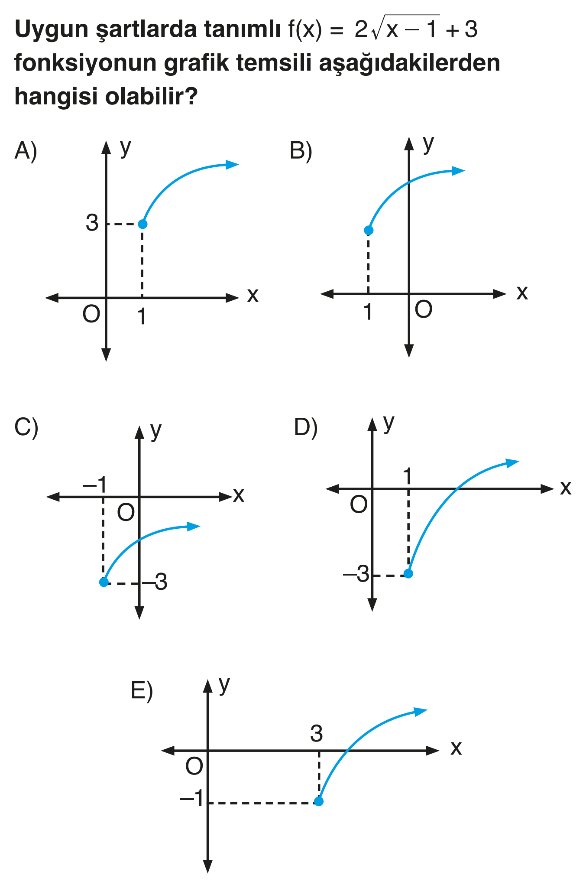
Çözüm
- $2\sqrt{x-1}+3$'ün başlangıç noktası $(1,3)$.
- $a=2\gt0$: grafik başlangıçtan sağa doğru yükselir.
- Bu grafik A'dır.
Cevap: A
Soru 2Cevap: E
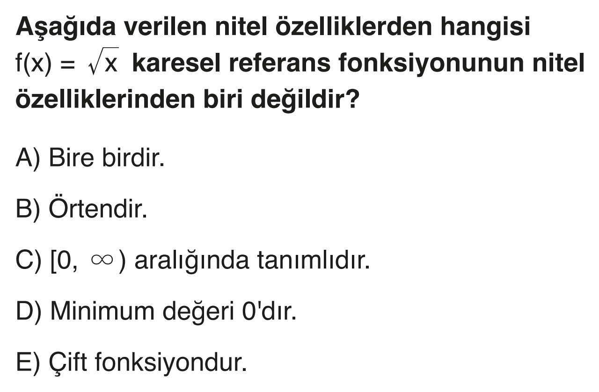
Çözüm
- $\sqrt x$ yalnız $[0,\infty)$'da tanımlıdır ve artandır: bire bir, $[0,\infty)$'a örten, minimum değeri $0$.
- Çift fonksiyon için tanım kümesi $0$'a göre simetrik olmalı.
- Negatif sayılarda tanımlı olmadığından çift değildir: cevap E.
Cevap: E
Soru 3Cevap: A
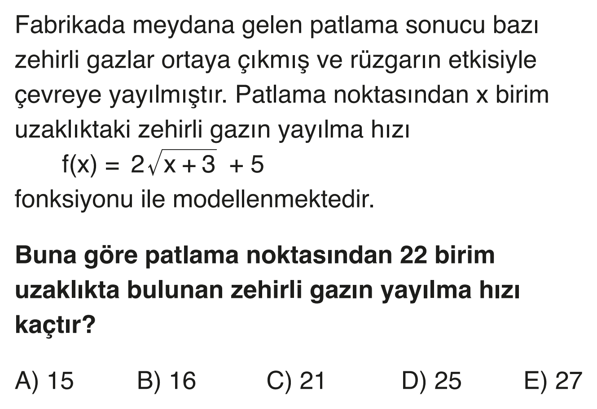
Çözüm
- $f(22)=2\sqrt{22+3}+5$.
- $=2\cdot5+5$.
- $=15$ (A).
Cevap: A
Soru 4Cevap: A
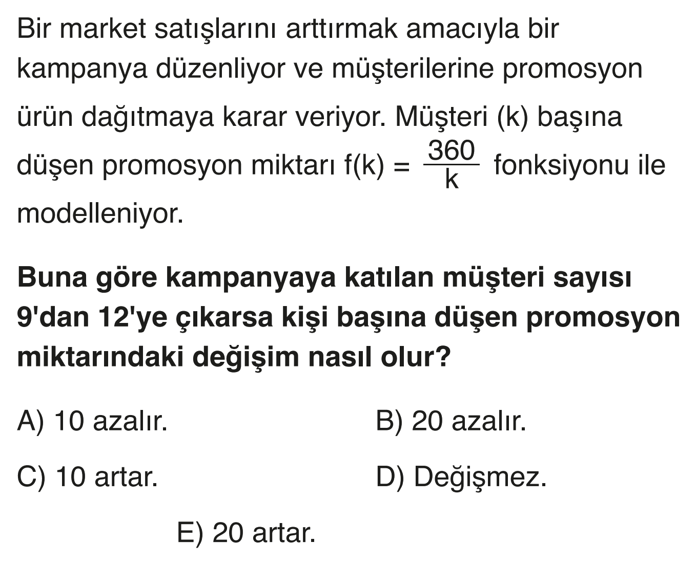
Çözüm
- $f(9)=\dfrac{360}9=40$.
- $f(12)=\dfrac{360}{12}=30$.
- Kişi başı promosyon $10$ azalır (A).
Cevap: A
Soru 5Cevap: C
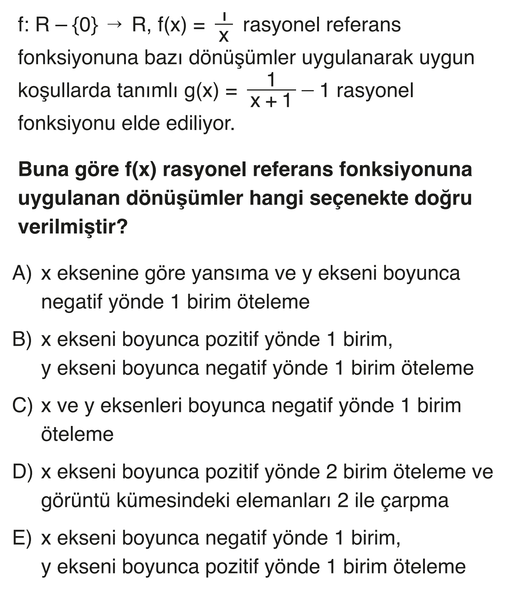
Çözüm
- $\dfrac1{x+1}$: $\dfrac1x$'in 1 birim sola (negatif yönde) ötelenmişi.
- $-1$: grafik 1 birim aşağı (negatif yönde) ötelenir.
- İki eksen boyunca da negatif yönde 1 birim (C).
Cevap: C
Soru 6Cevap: C
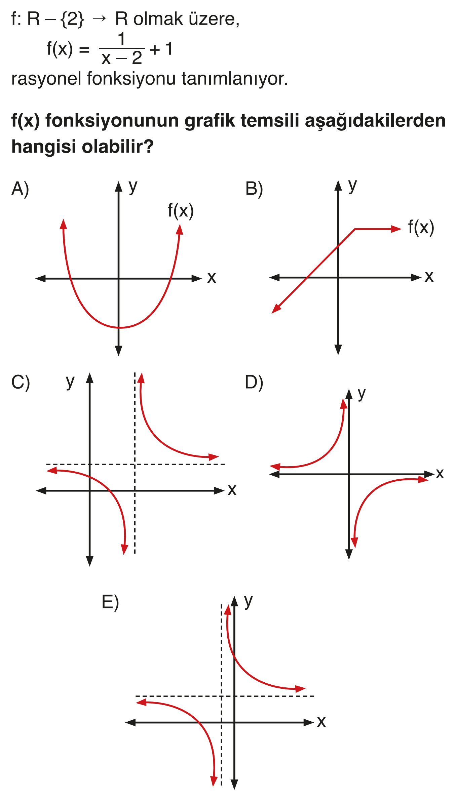
Çözüm
- Dikey asimptot $x=2$, yatay asimptot $y=1$.
- Pay pozitif: kollar asimptotlara göre sağ üst ve sol alt bölgede.
- Bu özellikler C'deki grafiktedir.
Cevap: C
Soru 7Cevap: C
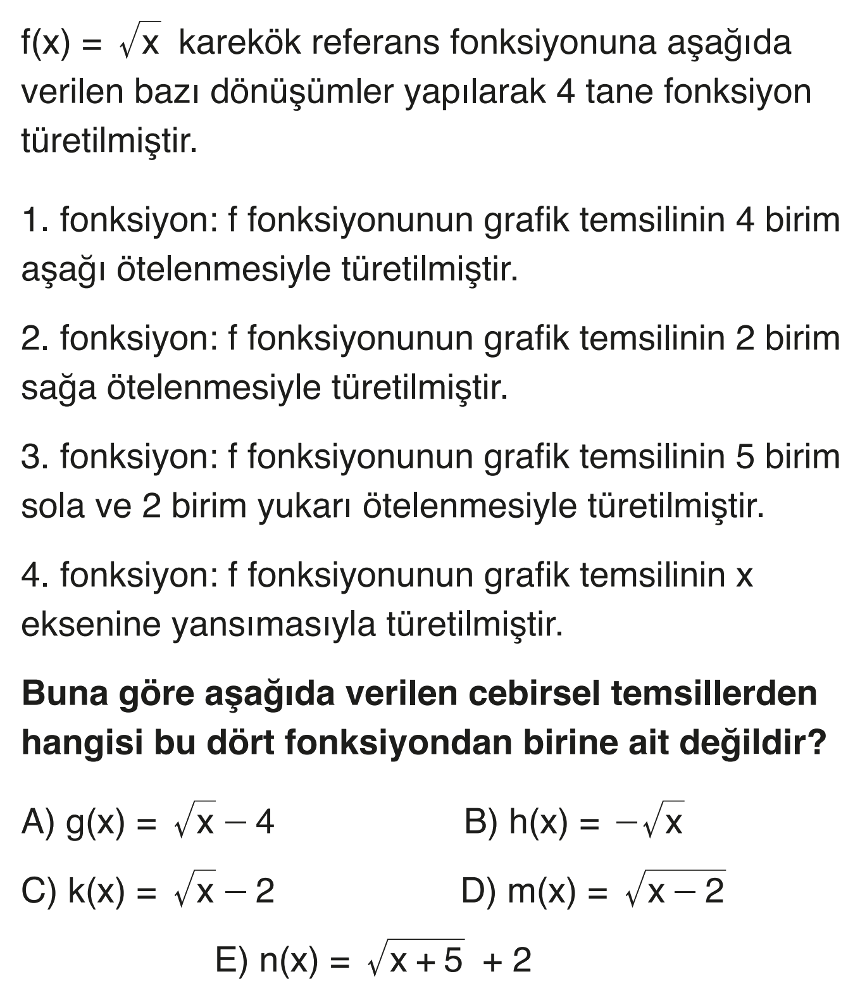
Çözüm
- 1. fonksiyon $\sqrt x-4$ (A), 2. fonksiyon $\sqrt{x-2}$ (D).
- 3. fonksiyon $\sqrt{x+5}+2$ (E), 4. fonksiyon $-\sqrt x$ (B).
- $\sqrt x-2$ bu dördünden biri değildir (C).
Cevap: C
Soru 8Cevap: B
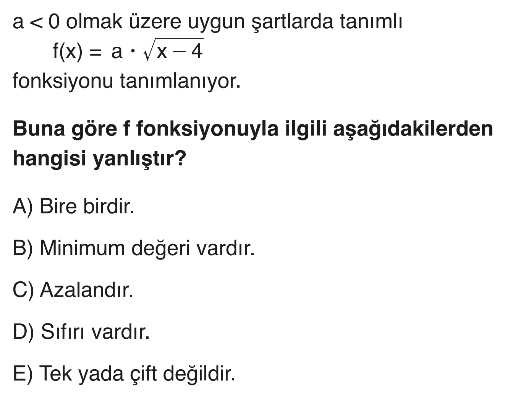
Çözüm
- $a\lt0$ iken $a\sqrt{x-4}$, $x=4$'te $0$'dan başlayıp sürekli azalır: bire bir ve azalan.
- Sıfırı $x=4$; tanım kümesi simetrik olmadığından tek ya da çift değil.
- Aşağı doğru sınırsız olduğundan minimum değeri yoktur: yanlış olan B.
Cevap: B
Soru 9Cevap: E
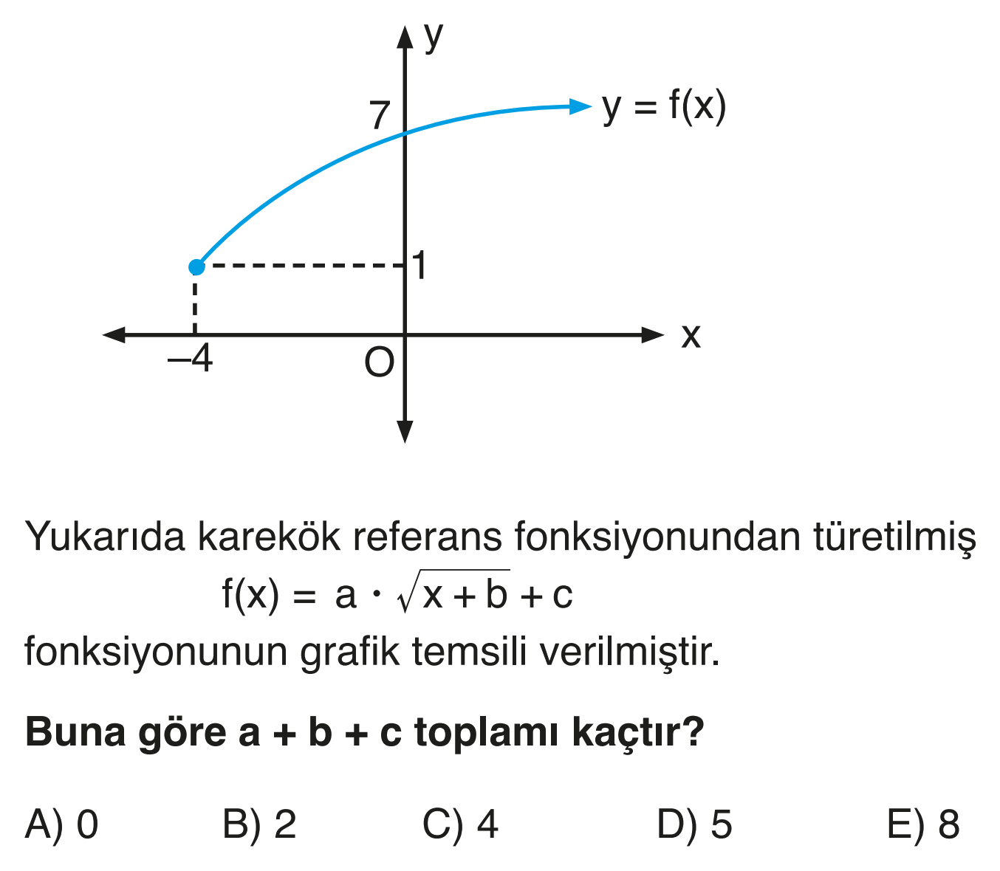
Çözüm
- Başlangıç noktası $(-4,1)$: $b=4$, $c=1$.
- $(0,7)$'den geçer: $a\sqrt4+1=7\Rightarrow a=3$.
- $a+b+c=3+4+1=8$ (E).
Cevap: E
Soru 10Cevap: E
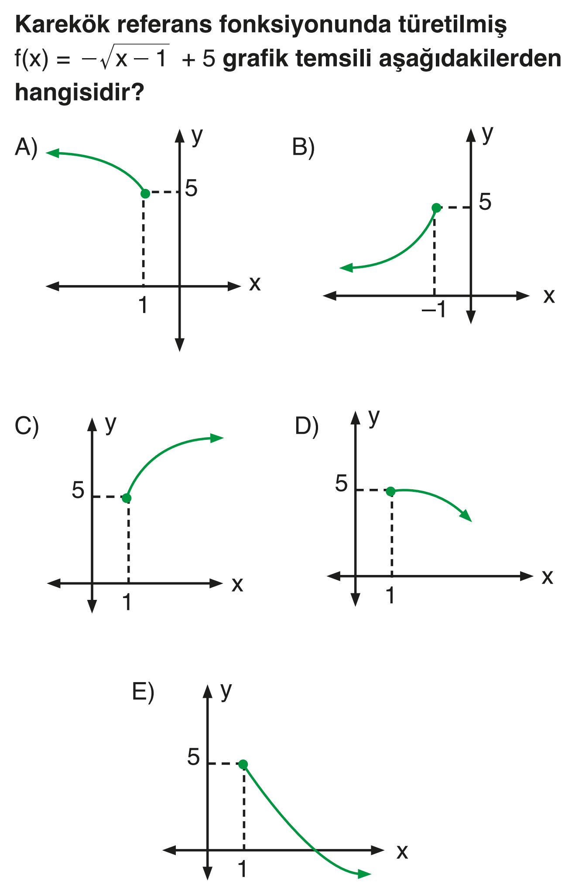
Çözüm
- $-\sqrt{x-1}+5$'in başlangıç noktası $(1,5)$.
- Baş katsayı negatif: grafik başlangıçtan itibaren azalır.
- $-\sqrt{x-1}+5=0\Rightarrow x=26$: grafik $x$ eksenini keserek iner; E.
Cevap: E
Soru 11Cevap: A
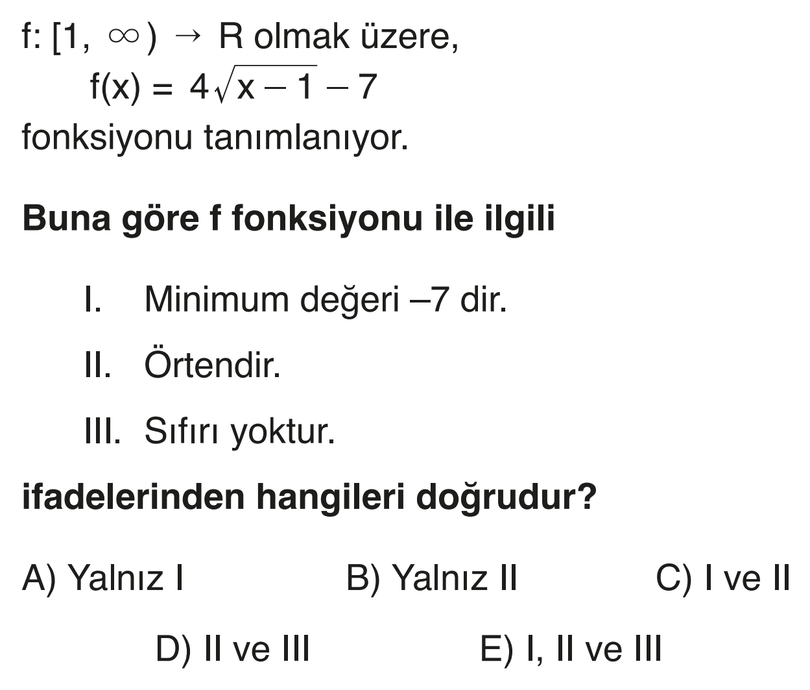
Çözüm
- $4\sqrt{x-1}-7$ artan; en küçük değer $f(1)=-7$ (I doğru).
- Görüntü $[-7,\infty)\ne\mathbb R$: örten değil (II yanlış).
- $4\sqrt{x-1}=7\Rightarrow x=1+\dfrac{49}{16}$: sıfırı vardır (III yanlış). Cevap A.
Cevap: A
Soru 12Cevap: A
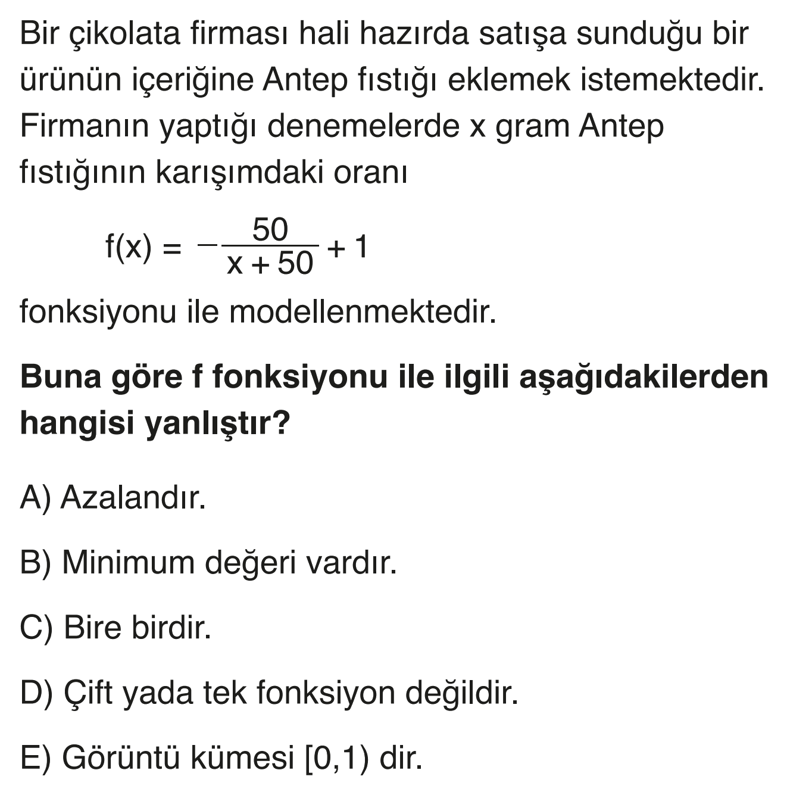
Çözüm
- $x\ge0$ için $x+50$ arttıkça $\dfrac{50}{x+50}$ azalır, $-\dfrac{50}{x+50}$ artar: $f$ artandır.
- $f(0)=0$ en küçük değer; $f(x)\lt1$; görüntü $[0,1)$, bire bir, tek/çift değil.
- Yanlış olan A.
Cevap: A
Soru 13Cevap: C
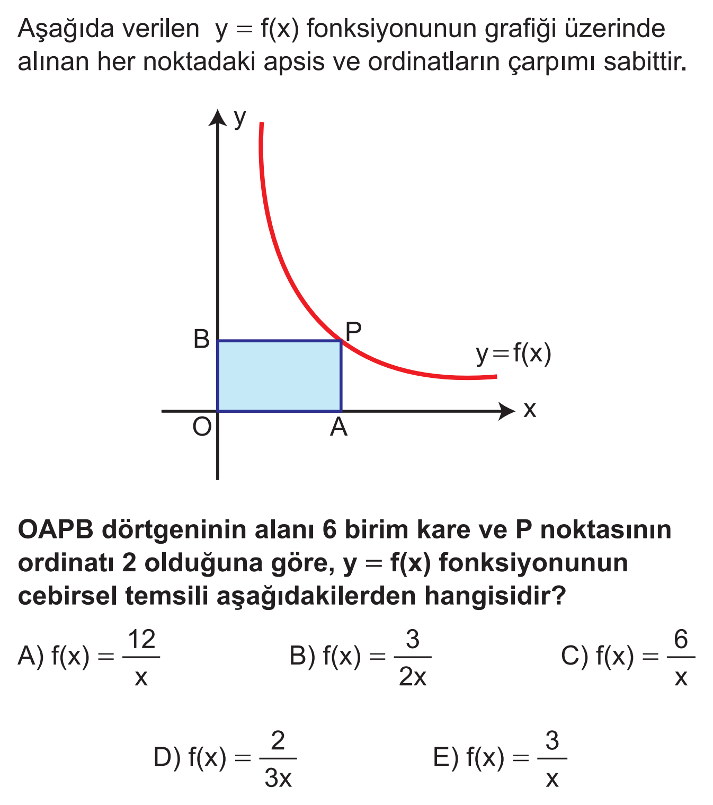
Çözüm
- Dikdörtgenin kenarları P'nin koordinatları: alan $x_P\cdot y_P=6$.
- $y_P=2\Rightarrow x_P=3$; apsis·ordinat sabit olduğundan $x\cdot f(x)=6$.
- $f(x)=\dfrac6x$ (C).
Cevap: C
Soru 14Cevap: D
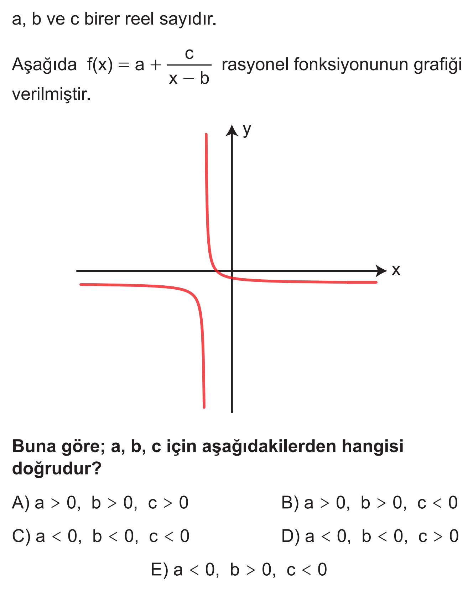
Çözüm
- Dikey asimptot $x=b$, $y$ ekseninin solunda: $b\lt0$.
- Yatay asimptot $y=a$, $x$ ekseninin altında: $a\lt0$.
- Kollar asimptotların kesişimine göre sağ üst ve sol alt bölgelerde: $c\gt0$. Cevap D.
Cevap: D
Soru 15Cevap: A
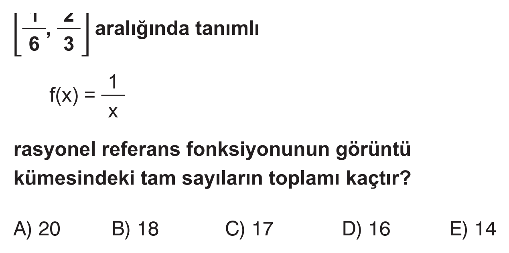
Çözüm
- $x\gt0$'da $\dfrac1x$ azalan: $f\left(\dfrac16\right)=6$, $f\left(\dfrac23\right)=\dfrac32$.
- Görüntü $\left[\dfrac32,6\right]$.
- Tam sayılar $2,3,4,5,6$; toplam $20$ (A).
Cevap: A
Soru 16Cevap: A
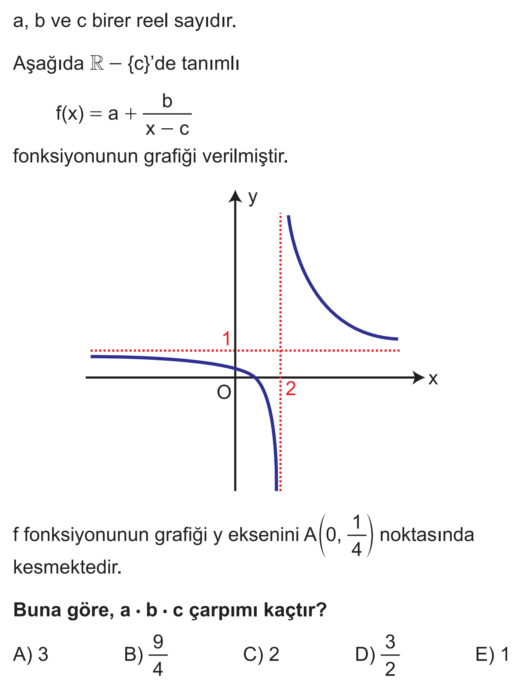
Çözüm
- Dikey asimptot $x=2$: $c=2$; yatay asimptot $y=1$: $a=1$.
- $f(0)=1+\dfrac b{-2}=\dfrac14\Rightarrow b=\dfrac32$.
- $a\cdot b\cdot c=1\cdot\dfrac32\cdot2=3$ (A).
Cevap: A
Soru 17Cevap: A
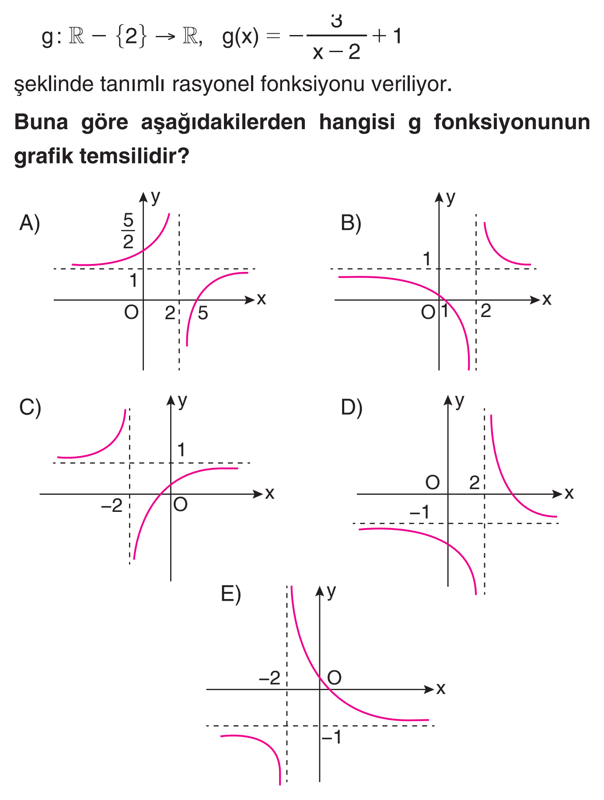
Çözüm
- Asimptotlar $x=2$ ve $y=1$; pay negatif: kollar sol üst ve sağ altta.
- $g(0)=\dfrac32+1=\dfrac52$.
- $\dfrac3{x-2}=1\Rightarrow x=5$: $x$ eksenini $5$'te keser. Grafik A.
Cevap: A
Soru 18Cevap: D
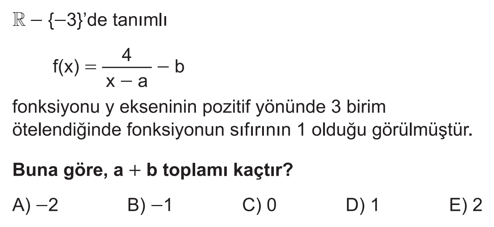
Çözüm
- Tanım kümesi $\mathbb R-\{-3\}$: $a=-3$.
- 3 birim yukarı: $h(x)=\dfrac4{x+3}-b+3$; $h(1)=1-b+3=0\Rightarrow b=4$.
- $a+b=1$ (D).
Cevap: D
Soru 19Cevap: B
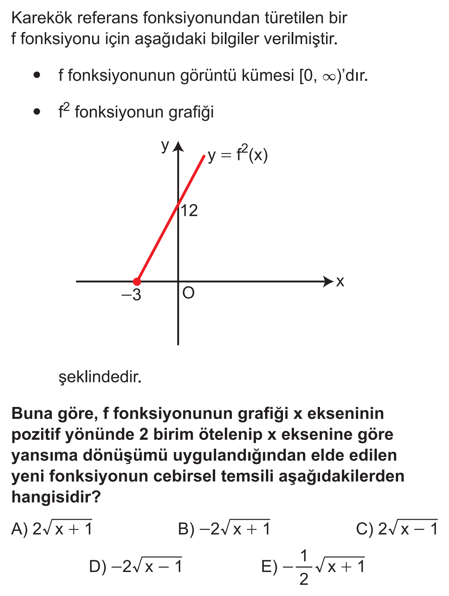
Çözüm
- $f^2$ doğrusu $(-3,0)$ ve $(0,12)$'den geçer: $f^2(x)=4(x+3)$; görüntü $[0,\infty)$ olduğundan $f(x)=2\sqrt{x+3}$.
- 2 birim sağa öteleme: $2\sqrt{x+1}$.
- $x$ eksenine göre yansıma: $-2\sqrt{x+1}$ (B).
Cevap: B
Soru 20Cevap: B
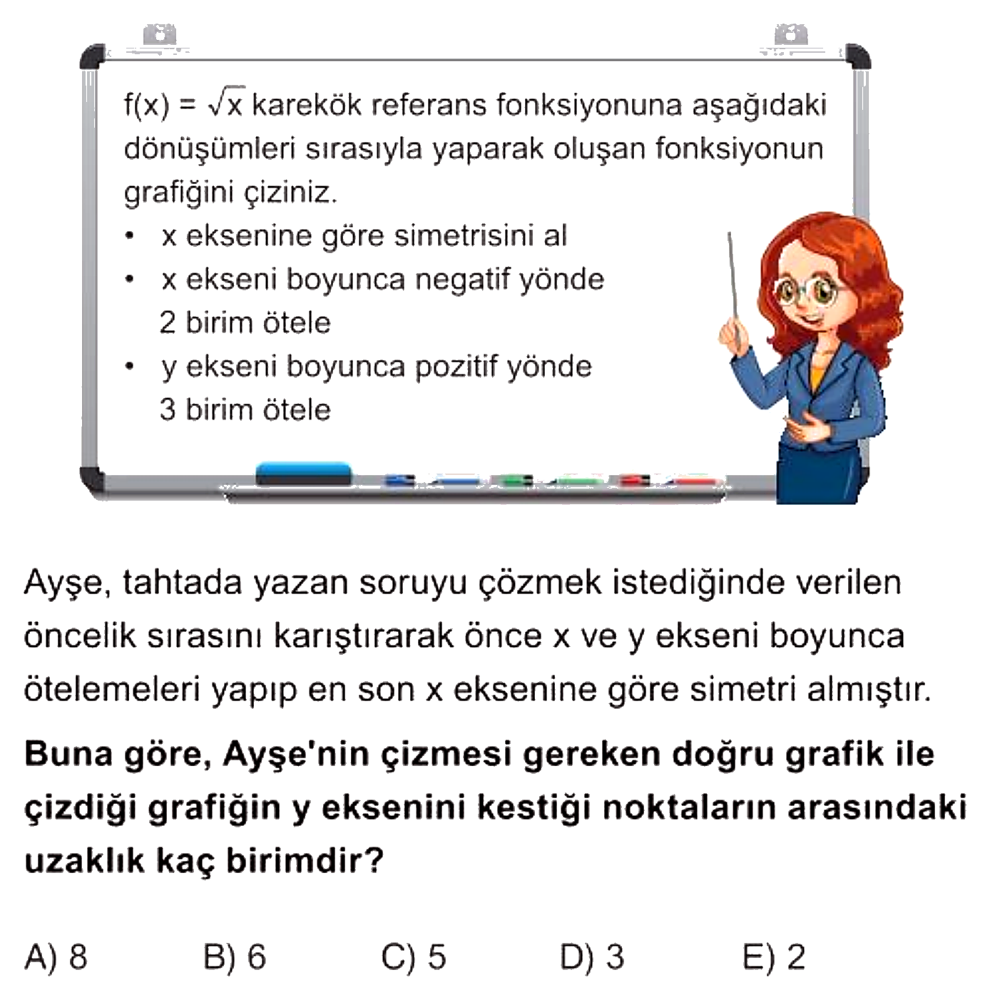
Çözüm
- Doğru sıra: yansıma $-\sqrt x$, 2 sola $-\sqrt{x+2}$, 3 yukarı $-\sqrt{x+2}+3$; $y$ eksenini $3-\sqrt2$'de keser.
- Ayşe'nin sırası: 2 sola, 3 yukarı $\sqrt{x+2}+3$, sonra yansıma $-\sqrt{x+2}-3$; $y$ eksenini $-3-\sqrt2$'de keser.
- Uzaklık $(3-\sqrt2)-(-3-\sqrt2)=6$ (B).
Cevap: B